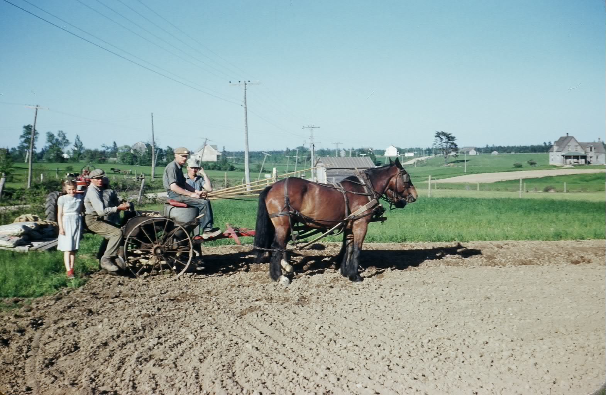

The Family Chronicle
No. 116 April18, 2006
____________________________________________________________________

Planting potatoes in Black River probably in 1952. From the left Margaret (Glendenning) Gibson, John Glendenning, Walter Glendenning and Norman Glendenning. I believe that the horses are King and June) Although taken in John’s field, homes of George and Mack Ggodfrey, the Manse, John Godfrey and John Gibson can be seen in the distance.
Planting Potatoes
I know that potatoes were once planted and covered by hand with a gasperaux between the potatoes for fertilizer; later potatoes were dropped in by hand and ploughed under. In my time, however, we had a one-row horse drawn potato planter. Brother Norman believes that the one shown above was not ours but actually belonged to George Dutcher.
In preparation for planting, potatoes
were cut into seeds so that each piece of potato had at least two eyes. Lime was sprinkled over the potatoes to protect them for a few days while waiting to be planted.
Potato planters had two hoppers – one to hold the potatoes and the other to hold the fertilizer. In the photo above, Walter is sitting on the fertilizer hopper. The planter automatically opened a small trench into which fertilizer flowed followed by potato seeds spaced about 6-8 inches apart. A set of disks formed a hill over the seeds
Mother’s apron
Mother wore an apron around the house as did most women of the community. It was the custom of the day. Mother’s was a bib apron, she slipped it over her head and tied it at the back and it covered the entire front of her dress. She put it on first thing in the morning and did not remove it until the day’s work was done – and that was just before bedtime.
Aprons protected her dress from the “clean dirt’ of cooking and cleaning; it was also a convenient place to wipe one’s hands. It could be quickly removed to show a clean dress if company arrived unexpectedly – which it often did. It might also be used for a quick swipe over a dusty table.
But the corner of an apron also doubled as a pot holder when removing a pan from the top of the stove or from the oven. A clean apron could be used to clean the buttermilk from your glasses.
One of my memories of Aunt Janet is of her out in the yard picking up dry chips for the kitchen stove and holding them in her turned up apron. In Aunt Janet’s case, gathering chips was sometimes to divert attention from the fact that she was actually returning from the privy.
Aprons could also be used to carry a few ripe apples from the transparent apple tree, bringing peas or beans from the garden or even to carry the eggs collected from the henhouse. I’m sure readers have some additional memories.
William Roland Weeks, DFC
Bill Weeks, son of Ellery and Eva (Daley) Weeks died in Loggieville recently; he served as a fighter pilot during WW2 and was awarded the Distinguished Flying Cross for his efforts including dive bombing, sorties and attacks against ground targets. In addition he destroyed 63 vehicles and 11 locomotives, an ammunition train, a miniature submarine and at least one enemy aircraft. Military records, declassified after the wa, show that Bill’s Spitfire, IX, Y2D (MK416) shot and wounded Field Marshall Rommel near Caen, France on July 17, 1944. A camera mounted on his spitfire recorded the incident.
The Family Chronicle (Copyright) is an occasional newsletter published by Don Glendenning and posted on the family website. It is intended to share information about my family, community and the times in which I grew up. While every effort is made to be accurate, errors are likely to occur. Comments, enquiries and information may be sent to 62 Queen Elizabeth Drive, Charlottetown, PEI, C1A 3A9. Tel: 902 892 5859. Email: dglende@auracom.com Web: www.glendenning.net/don